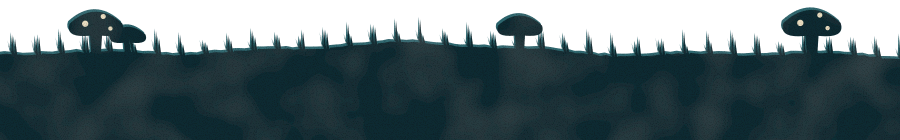

Chapter IIIof VI
seconds
left
14

Which one is really Maya?
A
Your pick
i will reorganize your spice rack while you shower and call it love
B
overthinking a text for 40 minutes then just sending 'k' 💀
You can change your pick until time runs out.